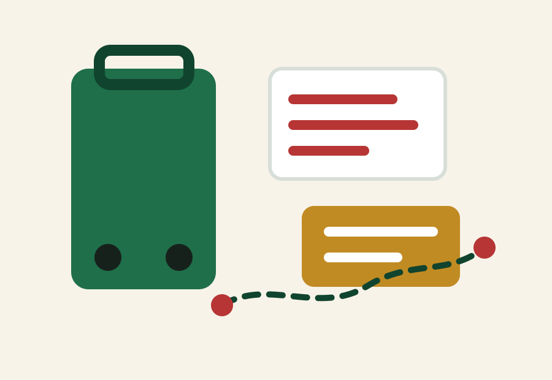

Cross-border travel
World Cup 2026 cross-border travel guide
The 2026 tournament spans the USA, Canada and Mexico. That creates amazing route options, but every border crossing adds documents, airport timing and backup-plan pressure.
Documents come before route fantasy
Before combining countries, confirm passport validity, visa or entry requirements, transit rules and airline document checks. A route that looks great on a map can fail at the airport if documents are not ready.
Good cross-border route patterns
- Vancouver plus Seattle for a Pacific Northwest route.
- Toronto plus nearby U.S. Northeast cities if flights or rail timing works.
- Mexico City plus Guadalajara or Monterrey before adding a U.S. leg.
- Final in New York New Jersey with one nearby U.S. city rather than a rushed international hop.
Add more buffer than a domestic trip
International arrivals, airport security, baggage, immigration, customs and unfamiliar transit make tight match-day transfers risky. Avoid landing in a new country on the same day as an anchor match.
Budget reality
Cross-border trips can add roaming, insurance, card-fee, baggage and local transport costs. Build a budget line for border friction, not just flights and hotels.
Border documents checklist
Google is already testing World Cup 2026 border intent. Fans should treat documents as a core route decision: a match ticket does not guarantee entry, and each host country can require different documents.
Decision table
| Route type | Why it works | Watch out for |
|---|---|---|
| Canada + U.S. nearby cities | Shorter regional logic | Entry rules and airport time |
| Mexico cluster first | Strong opening-week culture | Heat, altitude and onward flights |
| Three-country sampler | Big trip energy | High cost and fatigue |
| Single-country route | Simpler logistics | Less variety |
FAQ
Should I visit all three host countries?
Only if you have enough time and budget. A two-country or single-country route is often more comfortable.
Can I cross borders on match day?
It is possible but risky. For important matches, arrive the day before or earlier.
Sources and references
Related guides
Keep planning
Essentials hub